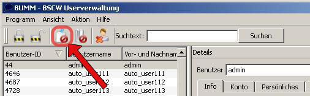
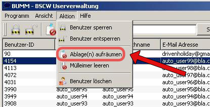

Ablage aufräumen
 
Führen sie eine der beiden Optionen aus, um die Ablage des ausgewählten Benutzers zu löschen.Ist kein Benutzer markiert, so wird die Ablage aller Benutzer aufgerämt.

Treffen Sie nun die Entscheidung, wie alt die Daten sein sollen, die Sie löschen wollen.